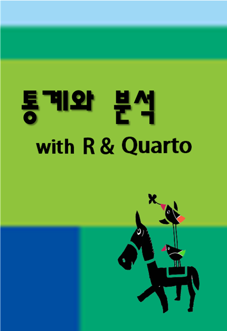

통계와 분석
For the class: Statistics and Analysis with R & Quarto
안내

이 책은 통계와 분석의 강의노트입니다. 개인적으로 공부하는 것이면 괜찮습니다. 다른 목적으로 이 책을 사용하려면 저자와 상의해야 합니다.
류춘렬, cryu@kookmin.ac.kr
이 강의에서 배우는 것은 아래와 같습니다. R을 적극적으로 활용한다는 점에서 데이터 사이언스 분야와 접근이 같지만 사회과학적 통계 이론과 데이터 분석에도 중점을 두므로 두 분야의 균형을 이룹니다.
- R과 R Studio를 이용한 통계 기법
- Quarto를 이용한 보고서 작성
- 데이터 다루기: 가져오기, 내보내기, 재구성, 변환
- 데이터 분석: 기술적 통계, 데이터 시각화
- 통계 이론: 확률분포와 표집분포의 이해, 여러 종류의 분포
- 통계적 추론: 가설을 검정하고 신뢰 구간을 계산하는 현대적 기법
- 예측적 모델 수립: 예측과 분류, 전망을 위한 회귀 모델
데이터 사이언스 분야는 Thulin (2021) https://modernstatisticswithr.com을 꽤 참고했습니다.
이 노트는 입말로 썼습니다. 내가 생각하기에, 입말이 글말보다 이해가 빠릅니다. 처음은 어색하지만 익숙해지면 편합니다.
이 강의 노트를 편집하는데 posit (2023) (사이트)와 Yihui Xie (2019) (사이트) 등의 여러 사이트에서 많은 도움을 받았습니다.
한 학기 동안 잘 달려갑시다!
참고로 이 강의 노트는 Quarto를 이용해서 작성하였습니다.
Dark Mode 버튼
왼쪽 위 통계와 분석 오른편에 Dark Mode 토글 버튼이 있습니다. 밝은 화면이 눈부시면 어두운 화면으로 바꾸세요.